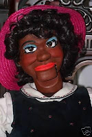

Eye change?
5/28/2009
{kind=link}

Question: Clinton, I was thinking of getting a pair of highly realistic eyes in brown for my female Col. Bill Boley figure. If I order them, can you install them in her and repaint her?
* * * * *
Answer: Normally I do not advise an eye change in a figure because the mechanics have to be totally rebuilt. But since this figure has no other extra effects, it could be a job that is cost effective. Can I give you a bit of personal advice? Avoid selecting a pair of eyes that are too human in appearance unless you intend to "freak out" some of our friends and audience. When a vent figure becomes too humanly realistic it will make some people uncomfortable. Part of the magic of ventriloquism is the fact that something obviously a puppet can be made to act in a lifelike manner. You don't want to lose that "magic". (I avoid eyes with veins in the white portion of the eyeball.)
To answer your question: Yes, I can install the eyes and repaint her, but to give you an exact price, I need to see her and the new eyes you select first hand. And, I'll have a few additional questions for you. When I have an idea of the time that will be required for the job I can quote you an exact price. You'll be under no obligation to me (other than the cost of return shipping) if you decide not to proceed.
Clinton